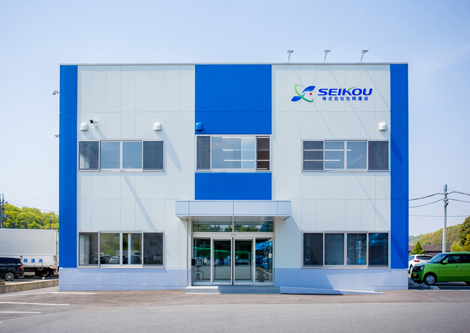

01
安全を、すべてに優先する。
無理な運行をしない。危険を見逃さない。データと現場判断の両方で安全を守ります。

岡山県井原市から、地域と物流の未来を支える。安全を仕組みにし、人を大切にする総合物流企業です。
荷物、お客様、社員、地域。すべてに誠実であることを、事業の中心に置いています。
無理な運行をしない。危険を見逃さない。データと現場判断の両方で安全を守ります。
働く人が守られ、成長できる環境が、安定した品質とお客様の安心につながります。
岡山・福山・広島・関東を結び、地域産業を支える物流ネットワークを育てます。
| 会社名 | 株式会社生興運送 |
|---|---|
| 代表者 | 代表取締役 西村 太延 |
| 所在地 | 〒715-0004 岡山県井原市木之子町3395 |
| 電話番号 | 0866-65-0112（代表）／0866-65-0198（配車） |
| 創業・設立 | 創業 1964年4月 ／ 設立 1969年10月 |
| 資本金 | 1,000万円 |
| 従業員数 | 173名（2026年7月現在） |
| 事業内容 | 貨物輸配送、倉庫業、物流センター運営、物流設計、指定自動車整備業、古物取扱（自動車） |
岡山県井原市にて創業。
株式会社生興運送を設立。
輸配送ネットワークと倉庫機能を順次拡充。
群馬県板倉町に関東拠点・自社倉庫を開設。
DX・安全・人材戦略を軸に、次の物流体制づくりを推進。
中国地方から関東まで、輸送・倉庫・整備の拠点をつないでいます。
岡山県井原市木之子町3395
輸配送・倉庫・整備の中核拠点
岡山・広島エリアを結ぶ営業・配車拠点
広島方面の配送と物流センター運営
群馬県板倉町。2024年開設の自社倉庫
輸送、倉庫、物流コストの見直しまで、お気軽にご相談ください。
↗FOR CANDIDATES安全を大切にできる環境で、次のキャリアを始めませんか。
↗